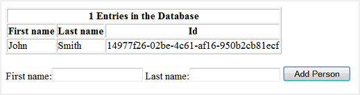
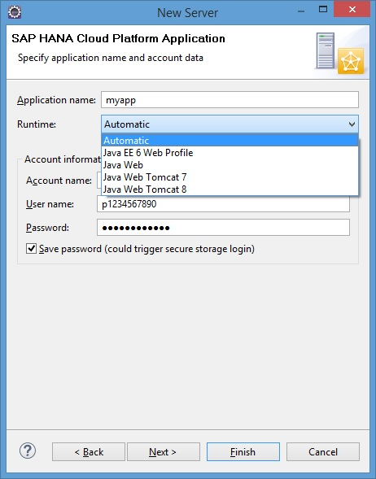

Adding Persistence with JDBC (Java Web SDK)
This step-by-step tutorial shows how you can use JDBC to persist data in a simple Java EE web application that manages a list of persons.
| Steps | Sample Application |
|---|---|
| Prerequisites |
The application is also available as a sample in the SDK for Java Web: Sample name: persistence-with-jdbc Location: <sdk>/samples folder More information: Samples |
| 1. Create a Dynamic Web Project and Servlet | |
| 2. Create the Person Entity | |
| 3. Create the Person DAO | |
| 4. Prepare the Web Application Project for JDBC | |
| 5. Extend the Servlet to Use Persistence | |
| 6. Test the Web Application on the Local Server | |
| 7. Deploy Applications Using Persistence on the Cloud from Eclipse IDE | |
| 8. Configure Applications Using the Cockpit | |
| 9. Start Applications Using Eclipse |
- You have downloaded and set up your Eclipse IDE, SAP Cloud Platform
Tools for Java, and SDK. For more information, see Setting Up the Development Environment.Note You need to install the SDK for Java Web.
- You have created a database. If you use an account on the trial landscape, you need to create a HANA MDC tenant database.For more information, see Creating Databases.
Create a dynamic web project and add a servlet, which you extend in step 4.
- From the Eclipse main menu, choose
 File
File  New Dynamic Web Project
New Dynamic Web Project  .
. - Enter the Project name persistence-with-jdbc.
- In the Target Runtime pane, select Java Web as the runtime you want to use to deploy the application.
- Leave the default values for the other project settings and choose Next.
- On the Java screen, leave the default settings and choose Next.
- In the Web Module configuration settings, select the Generate web.xml deployment descriptor checkbox and choose Finish.
- To add a servlet to the project you have just created, choose File New Web Servlet from the Eclipse main menu.
- Enter the Java package com.sap.cloud.sample.persistence and the class name PersistenceWithJDBCServlet. Choose Finish to generate the servlet.
Create an entity class named Person with basic attributes.
- In the Project Explorer view, select the persistence-with-jdbc/Java Resources/src/com.sap.cloud.sample.persistence node.
- From the context menu, choose New Class , check that the package entered is
com.sap.cloud.sample.persistence, enter the class
name Person, and choose Finish.
- Open the file in the text editor and
insert the following content:
package com.sap.cloud.sample.persistence; /** * Class holding information on a person. */ public class Person { private String id; private String firstName; private String lastName; public String getId() { return id; } public void setId(String newId) { this.id = newId; } public String getFirstName() { return this.firstName; } public void setFirstName(String newFirstName) { this.firstName = newFirstName; } public String getLastName() { return this.lastName; } public void setLastName(String newLastName) { this.lastName = newLastName; } } - Save the class.
Create a DAO class, PersonDAO, in which you encapsulate the access to the persistence layer.
- In the Project Explorer view, select the node.
- From the context menu, choose New Class , check that the package entered is
persistence-with-jdbc/Java
Resources/src/com.sap.cloud.sample.persistencecom.sap.cloud.sample.persistence, enter the class
name PersonDAO, and choose Finish.
- Open the file in the text editor and
insert the following content:
package com.sap.cloud.sample.persistence; import java.sql.Connection; import java.sql.DatabaseMetaData; import java.sql.PreparedStatement; import java.sql.ResultSet; import java.sql.SQLException; import java.util.ArrayList; import java.util.List; import java.util.UUID; import javax.sql.DataSource; /** * Data access object encapsulating all JDBC operations for a person. */ public class PersonDAO { private DataSource dataSource; /** * Create new data access object with data source. */ public PersonDAO(DataSource newDataSource) throws SQLException { setDataSource(newDataSource); } /** * Get data source which is used for the database operations. */ public DataSource getDataSource() { return dataSource; } /** * Set data source to be used for the database operations. */ public void setDataSource(DataSource newDataSource) throws SQLException { this.dataSource = newDataSource; checkTable(); } /** * Add a person to the table. */ public void addPerson(Person person) throws SQLException { Connection connection = dataSource.getConnection(); try { PreparedStatement pstmt = connection .prepareStatement("INSERT INTO PERSONS (ID, FIRSTNAME, LASTNAME) VALUES (?, ?, ?)"); pstmt.setString(1, UUID.randomUUID().toString()); pstmt.setString(2, person.getFirstName()); pstmt.setString(3, person.getLastName()); pstmt.executeUpdate(); } finally { if (connection != null) { connection.close(); } } } /** * Get all persons from the table. */ public List<Person> selectAllPersons() throws SQLException { Connection connection = dataSource.getConnection(); try { PreparedStatement pstmt = connection .prepareStatement("SELECT ID, FIRSTNAME, LASTNAME FROM PERSONS"); ResultSet rs = pstmt.executeQuery(); ArrayList<Person> list = new ArrayList<Person>(); while (rs.next()) { Person p = new Person(); p.setId(rs.getString(1)); p.setFirstName(rs.getString(2)); p.setLastName(rs.getString(3)); list.add(p); } return list; } finally { if (connection != null) { connection.close(); } } } /** * Check if the person table already exists and create it if not. */ private void checkTable() throws SQLException { Connection connection = null; try { connection = dataSource.getConnection(); if (!existsTable(connection)) { createTable(connection); } } finally { if (connection != null) { connection.close(); } } } /** * Check if the person table already exists. */ private boolean existsTable(Connection conn) throws SQLException { DatabaseMetaData meta = conn.getMetaData(); ResultSet rs = meta.getTables(null, null, "PERSONS", null); while (rs.next()) { String name = rs.getString("TABLE_NAME"); if (name.equals("PERSONS")) { return true; } } return false; } /** * Create the person table. */ private void createTable(Connection connection) throws SQLException { PreparedStatement pstmt = connection .prepareStatement("CREATE TABLE PERSONS " + "(ID VARCHAR(255) PRIMARY KEY, " + "FIRSTNAME VARCHAR (255)," + "LASTNAME VARCHAR (255))"); pstmt.executeUpdate(); } } - Save the class.
- Add the XSS Protection Library to the
web application project:
- In the persistence-with-jdbc/JavaProject Explorer view, select the persistence-with-jdbc/WebContent/WEB-INF/lib node.
- From the context menu, choose Import General File System and then choose Next.
- Browse to the local directory where you downloaded and unpacked the SAP Cloud Platform SDK, select the repository/plugins directory, and choose OK.
- Adapt the Java build path order:
- In the Project Explorer view, select the persistence-with-jdbc node, and from the context menu choose Properties.
- Select Java Build Path and switch to the Order and Export tab.
- Select Web App Libraries.
- Choose OK.
- Add the resource reference description
to web.xml:
- In the Project Explorer view, expand the persistence-with-jdbc/WebContent/WEB-INF node.
- Select
web.xml, and from the context menu choose Open With Text Editor .
- Insert the following content after the
<servlet-mapping> or
<welcome-file-list> element:
<resource-ref> <res-ref-name>jdbc/DefaultDB</res-ref-name> <res-type>javax.sql.DataSource</res-type> </resource-ref> - Save the file.
- Optionally modify the servlet
deployment descriptor information:
- Open the web.xml file as in the previous step.
- Replace the URL pattern
"/PersistenceWithJDBCServlet" that was generated for the servlet with
"/" as shown below:
<servlet-mapping> <servlet-name>PersistenceWithJDBCServlet</servlet-name> <url-pattern>/</url-pattern> </servlet-mapping>NoteIf your servlet version is 3.0 or higher, you just need to change the WebServlet annotation in the PersistenceWithJDBCServlet.java class to be as the following: @WebServlet("/").
- Save the file.
Note An application's URL path contains the context root followed by the optional URL pattern ("/<URL pattern>"). The servlet URL pattern that is automatically generated by Eclipse uses the servlet’s class name as part of the pattern. Since the cockpit only displays the context root, this means that you cannot directly open the application in the cockpit without adding the servlet name. To call the application by only the context root, use "/" as the URL mapping, then you will no longer have to correct the URL in the browser.
Extend the servlet to use the persistence functionality. The servlet adds Person entity objects to the database, retrieves their details, and displays them on the screen.
- In the Project Explorer view, expand the persistence-with-jdbc/src/com.sap.cloud.sample.persistence node.
- Select
PersistenceWithJDBCServlet.java, and from the context
menu choose Open With Java Editor .
- In the opened editor, replace the entire servlet
class with the following content:
package com.sap.cloud.sample.persistence; import java.io.IOException; import java.sql.SQLException; import java.util.List; import javax.naming.InitialContext; import javax.naming.NamingException; import javax.servlet.ServletException; import javax.servlet.http.HttpServlet; import javax.servlet.http.HttpServletRequest; import javax.servlet.http.HttpServletResponse; import javax.sql.DataSource; import org.slf4j.Logger; import org.slf4j.LoggerFactory; import com.sap.security.core.server.csi.IXSSEncoder; import com.sap.security.core.server.csi.XSSEncoder; /** * Servlet implementing a simple JDBC based persistence sample application for * SAP Cloud Platform. */ public class PersistenceWithJDBCServlet extends HttpServlet { private static final long serialVersionUID = 1L; private static final Logger LOGGER = LoggerFactory .getLogger(PersistenceWithJDBCServlet.class); private PersonDAO personDAO; /** {@inheritDoc} */ @Override public void init() throws ServletException { try { InitialContext ctx = new InitialContext(); DataSource ds = (DataSource) ctx .lookup("java:comp/env/jdbc/DefaultDB"); personDAO = new PersonDAO(ds); } catch (SQLException e) { throw new ServletException(e); } catch (NamingException e) { throw new ServletException(e); } } /** {@inheritDoc} */ @Override protected void doGet(HttpServletRequest request, HttpServletResponse response) throws ServletException, IOException { response.getWriter().println("<p>Persistence with JDBC!</p>"); try { appendPersonTable(response); appendAddForm(response); } catch (Exception e) { response.getWriter().println( "Persistence operation failed with reason: " + e.getMessage()); LOGGER.error("Persistence operation failed", e); } } /** {@inheritDoc} */ @Override protected void doPost(HttpServletRequest request, HttpServletResponse response) throws ServletException, IOException { try { doAdd(request); doGet(request, response); } catch (Exception e) { response.getWriter().println( "Persistence operation failed with reason: " + e.getMessage()); LOGGER.error("Persistence operation failed", e); } } private void appendPersonTable(HttpServletResponse response) throws SQLException, IOException { // Append table that lists all persons List<Person> resultList = personDAO.selectAllPersons(); response.getWriter().println( "<p><table border=\"1\"><tr><th colspan=\"3\">" + resultList.size() + " entries in the Database</th></tr>" + (resultList.isEmpty() ? "<tr><td colspan=\"3\">Database is empty</td></tr>" : "<tr><th>First Name</th><th>Last Name</th><th>Id</th></tr>")); IXSSEncoder xssEncoder = XSSEncoder.getInstance(); for (Person p : resultList) { response.getWriter().println( "<tr><td>" + xssEncoder.encodeHTML(p.getFirstName()) + "</td><td>" + xssEncoder.encodeHTML(p.getLastName()) + "</td><td>" + p.getId() + "</td></tr>"); } response.getWriter().println("</table></p>"); } private void appendAddForm(HttpServletResponse response) throws IOException { // Append form through which new persons can be added response.getWriter() .println( "<p><form action=\"\" method=\"post\">" + "First name:<input type=\"text\" name=\"FirstName\">" + " Last name:<input type=\"text\" name=\"LastName\">" + " <input type=\"submit\" value=\"Add Person\">" + "</form></p>"); } private void doAdd(HttpServletRequest request) throws ServletException, IOException, SQLException { // Extract name of person to be added from request String firstName = request.getParameter("FirstName"); String lastName = request.getParameter("LastName"); // Add person if name is not null/empty if (firstName != null && lastName != null && !firstName.trim().isEmpty() && !lastName.trim().isEmpty()) { Person person = new Person(); person.setFirstName(firstName.trim()); person.setLastName(lastName.trim()); personDAO.addPerson(person); } } } - Save the servlet. The project should compile without any errors.
- To test your web application on the local server, follow the steps for deploying a web application locally as described in Deploying Locally from Eclipse IDE. You should see the following output:
- Enter a first name (for example,
John) and a last name (for example,
Smith) and choose Add Person.
John Smith is added to the database as shown below:

If you add more names to the database, they will also be listed in the table displayed.
To test your web application in the cloud, define a server in Eclipse. Use the cockpit to create a default binding for your application. Add the application to the new server and start it. This will the deploy the application on the cloud, and you should see the same output as when the application was tested on the local server.
Prerequisites
- You have set up your runtime environment in the Eclipse IDE. For more information, see Setting Up the Runtime Environment.
- You have developed or imported a Java Web application in Eclipse IDE. For more, information, see Developing Java Applications or Importing Samples as Eclipse Projects
- Switch to the Servers view in the Eclipse IDE.
- Open the context menu and define a server with the following settings:
- Select the server type SAP SAP Cloud Platform .
- Use the landscape host depending on your account type and choose Next. For more information, see Landscape Hosts.
- Specify your application name (only lowercase Latin letters and digits
are allowed).Note The application name should be unique enough so that your deployed application can be easily identified.
- Select a runtime. If you leave the Automatic option, the server will load the target runtime of your application.
- Enter your account name, e-mail or user name, and password and choose
Next.

Note- If you have previously entered an account and user name for your landscape host, these names will be prompted to you in dropdown lists.
- A dropdown list will be displayed as well for previously entered landscapes hosts.
- If you select the Save password box, the entered password for a given user name will be remembered and kept in the secure store.
- Do not select your application on the Add and
Remove screen.Note Adding an application would automatically start this application with the effect that it would fail because no data source binding exists. You will add an application in a later step.
- Choose Finish.
- Select the server type
- On the Servers view, open the context menu for the server
you just created and choose Show In Cockpit . The cockpit opens inside Eclipse.
- In the cockpit, select an account and choose Persistence Databases & Schemas in the navigation area.
- Select the database that you want to create a binding for.
- Choose Data Source Bindings in the navigation
area.Note For more information on Data Source Bindings, see Binding Databases.
- Define a binding (<DEFAULT>) for the application and select a
database ID. Choose Save.
This creates a default binding for the application. You can use an existing database or create a new one.
- On the Servers view in Eclipse, open the context menu for
the server and choose Add and Remove... <application name> . To add the application to the server, add the application to the
panel on the right side. Choose Finish.
- Start the server. This will deploy the application and start it on the SAP Cloud Platform.
You can access the application by clicking the application URL on the application overview page in the cockpit.
You cannot deploy multiple applications on the same application process. Deployment of a second application on the same application process overwrites any previous deployments. If you want to deploy several applications, deploy each of them on a separate application process.